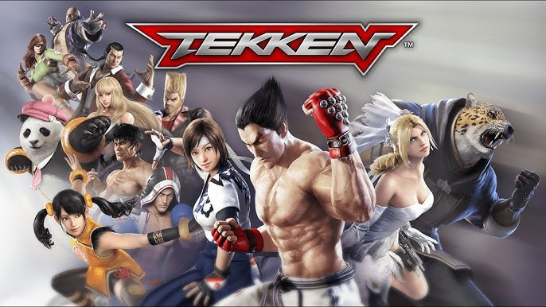

Date: 2018-03-01
Title: Tekken Mobile
Summary: A mobile adaptation of Tekken featuring simplified controls, card mechanics, and online events.
Categories: Spin-Off, Mobile
Type: Game Files
File Size: ~1.5 GB
Format: APK / iOS App
Region: Global
Platform: Android / iOS
Tekken Mobile is a spin-off designed for smartphones, bringing the Tekken fighting experience to Android and iOS devices. The game features simplified touch controls combined with a card-based upgrade system, allowing players to enhance abilities and unlock special moves. It includes story missions, live events, and online battles against other players. While it differs from traditional Tekken gameplay, it offers a portable and accessible version of the franchise for mobile users.
Note: Support Original Game By Never Forgetting About it Because It's No Longer Available (used to be available on android and ios ) . --Tekken Mobile Can not be Played because servers has closed .